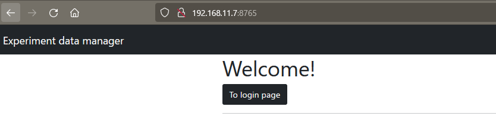
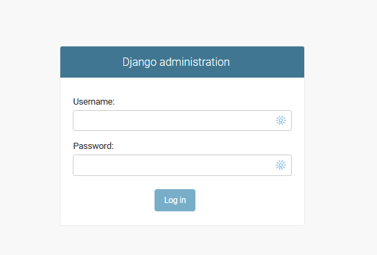
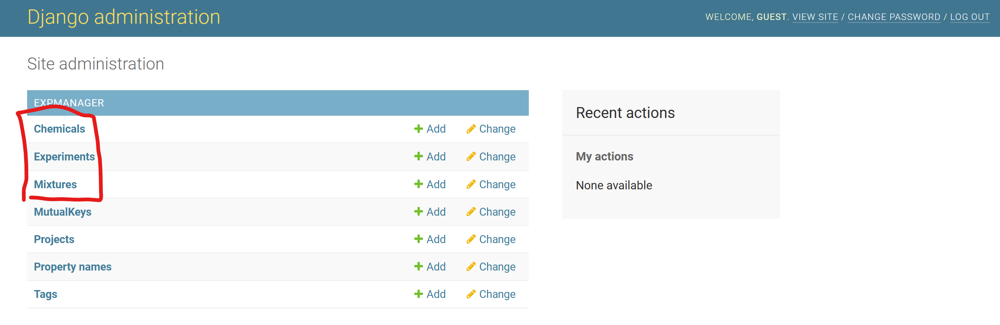

3. Access Website¶
3.1. Launch your browser¶
Using your browser, access the server.
access e.g., “http://localhost:8000/”
the address changes with your server configuration 
Click “To Login page”
3.2. Login¶
Enter your user id and pass 
3.3. Admin page¶
You will see an admin page after successful login 
There are three important pages for the Expmanager
Chemical
Register chemical information
Experiment
Register your experiments
Mixture
Register mixtures consisting of chemicals
Basically, you don’t have to access other pages